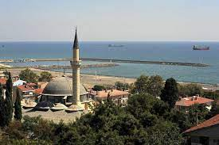
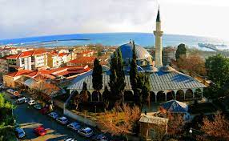
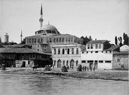
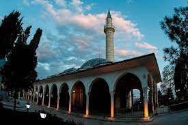
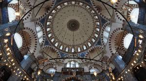

Külliyenin camii, bedesten, medrese ve kitaplık bölümü günümüzde de varlığını sürdürmektedir. Külliyenin vaktiyle kervansarayı ve imareti olduğu çeşitli kaynaklarda yer almaktadır.
Rüstempaşa Külliyesi içinde en belirgin yeri tutan Rüstempaşa Camii, 1553 tarihinde Kanuni Sultan Süleyman'ın damadı Rüstem Paşa tarafından denize hâkim bir tepe üzerinde Mimar Sinan'a yaptırılmıştır.
Caminin 30 metre doğusunda bulunan medrese 1880'de harap olunca üzerine ahşap bir okul kurulmuştur. Rüştiye ve İdadi olarak kullanılan bu yapı daha sonra Cumhuriyet İlkokulu olarak da hizmet vermiştir.


Cami ile medresenin arasında kare planlı ve kubbeli olarak yapılan kitaplık binasına ocak ve baca eklenmiş ve bu yapı sonrasında camii; aşhane olarak kullanılmaya başlanmıştır.
Medresenin yanında yer alan hamam, orijinalinde kadınlar ve erkekler kısmı olmak üzere bir çifte hamam şeklinde üstü kubbeyle örtülü olarak yapılmıştır.
Caminin batısında yeralan bedesten 6 kubbeli, dikdörtgen planlı bir yapıdır. Taş ve tuğla karışımından inşa edilmiş olan ve son yıllarda onarılan bu yapı külliyenin cami ile birlikte sağlam olarak görülebilen kısımlarındandır.
Ayrıca Rüstempaşa Camii’nin doğusunda inşaatı 1988 yılında tamamlanan bir çarşı mevcuttur. Yeri Vakıflar Genel Müdürlüğü'ne ait olan bu çarşı, İl Özel İdaresi ve Vakıflar Genel Müdürlüğünce ortaklaşa yapılmıştır. Çarşı, külliyenin dönem özelliklerini yansıtan mimariye sahiptir.
Rüstempaşa külliyesinden başka Osmanlı Dönemi’ne ait diğer önemli eserler arasında Orta Cami, Eski Cami, Hasan Efendi Cami, İnecik-İmaret Camisi, Hamami Mehmet Paşa Türbesi, Kırklar Türbesi, Sadi Baba Türbesi, Yalı Hamamı, İnecik-Erenler Hamamı ve birçok tarihi çeşmeyi saymak mümkündür.
Yukarıda sayılan tarihi yapıtların yanında Kurtuluş Anıtı, Namık Kemal Anıtı, Şehitler Çeşmesi Anıtı ve Hürriyet Abidesi, Tekirdağ'daki önemli tarihi eserlerdir.
Tekirdağ'ın geçmişi ile ilgili malzeme ve eserlerin sergilendiği 3 tane de müze bulunmaktadır.

